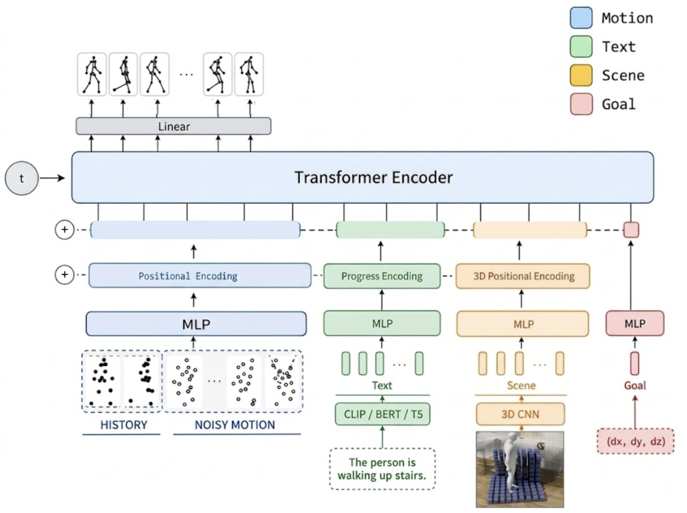

We present a diffusion model for generating human motion conditioned jointly on natural-language text, 3D scene geometry, and a target trajectory goal. Rather than routing each condition through its own cross-attention path, we represent text, scene, and goal as tokens that are concatenated onto the motion sequence and processed by a single shared self-attention transformer, with the diffusion timestep injected via AdaLN-Zero. Each condition is trained with independent classifier-free-guidance dropout, so at sampling time any subset of text, scene, and goal can be supplied, omitted, or guided at its own strength. We train on NymeriaPlus, a large-scale dataset of real-world egocentric motion capture with paired scene geometry and text annotations, using a floor-anchored joint-position motion representation. An earlier iteration of this idea anchored the local coordinate frame on the raw pelvis position and hard-inpainted the goal into the generated window; we found this broke scene and goal conditioning whenever pose changed the pelvis’s height above the floor, and describe the representation changes – anchoring on estimated floor height instead, and treating the goal as a soft, CFG-guided token like text and scene – that fixed it. We report qualitative rollouts on held-out test sequences spanning locomotion and everyday scene interactions such as cooking, using a fridge, sitting, and lying down, and leave a quantitative evaluation to future work.

Sweeping one condition’s classifier-free guidance scale from 0 to 3, with the other two held fixed, on a synthetic scene. Increasing text guidance sharpens the described arm motion; increasing scene guidance pulls the trajectory away from the obstacle; increasing goal guidance pulls the endpoint toward the marked waypoints.
@misc{pimentel2026humanmotion,
author = {Pimentel, Lucas Pilla},
title = {Human Motion Generation from Text, Scene, and Trajectory},
year = {2026},
note = {Technical University of Munich},
url = {https://github.com/LucasPilla/3d-scanning-and-spatial-learning}
}